Updated 26 October 2026 · observed Earth climate normals
Climate accuracy and the joint fit
Temperature is closer than rainfall. The latest qualified Earth physics, r39, improves regional rainfall loss by 2.30%, but local errors remain substantial. The fantasy-world Earth atlas still uses the verified r38 climate: later r39 world fits have not passed every release check.
1.79 °CMonthly temperature MAE31 development regions, equal regional weight
32.84 mmMonthly rainfall MAE3,667 cities sampled from regional model cells
46.47%Annual rain totals within 25%City comparison; slightly below r38's 46.66%
MAE is mean absolute error. These are different summaries, not one overall accuracy percentage. The cities share reused regional runs; they are not an independent global station validation. The model is checked against modern WorldClim normals, not reconstructed weather for 200 AD.
Headline measurements retain the historical equal-month (365/12-day) benchmark. The separate four-region observation-calendar audit below changes no physical fit or headline statistic.
The rainfall problem is regional
Iran improves, while North India remains far too dry. Extending numerical warm-up barely changes these errors. The audit below reproduces all three archived climates exactly and passes all per-step solver checks.
| Region | r39 rain, mm/year | Observed, mm/year |
|---|
| North India | 256 | 761 |
|---|
| Iran plateau | 365 | 232 |
|---|
| Iberia | 445 | 392 |
|---|
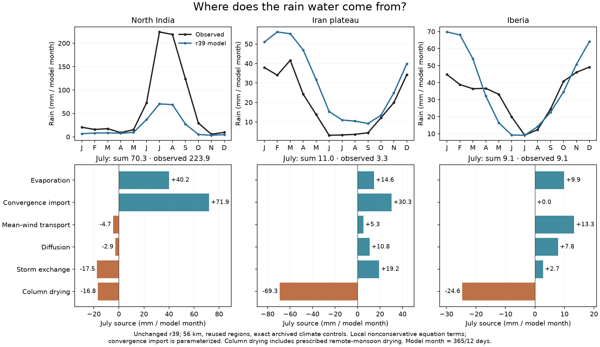
North India's July rain is 70 mm against 224 mm observed. Evaporation and parameterized convergence supply water, while net transport and drying remove it. The bars sum to simulated rain up to the small local equation residual. Positive and negative terms can vary within a region; they are not source-water tracers.
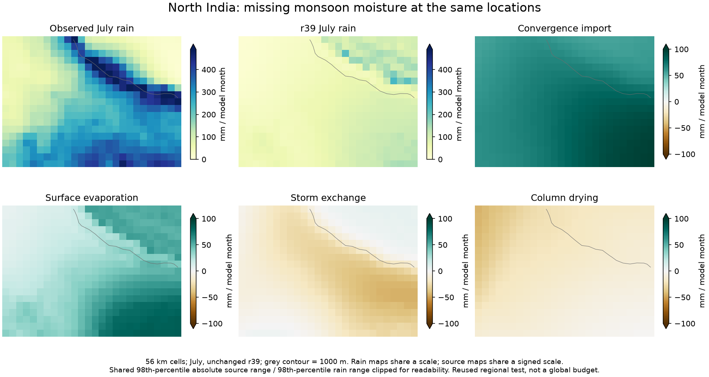
Matched 56 km cells show where rain and local equation sources occur. Source maps share a signed colour scale, with extremes clipped. These are concentration-advection equation diagnostics, not a closed global water budget.
Can the joint fit stay physically realistic?
We can preserve the shared physical laws and fit uncertain geography separately. The new input boundary locks Earth's solar flux, greenhouse reference, radius, tilt, rotation and calendar; fantasy-world changes cannot alter that Earth test. World profiles also cannot replace the verified physical or solver settings.
That removes a tooling weakness, but the transfer problem remains. In the nine-layout audit, r39's average world-fit gain was positive and seven of nine paired gains were positive, yet its declared bootstrap interval crossed zero. The release gate therefore rejected it. The existing fantasy planet also has retrograde rotation and a 33.5° tilt; it is Earth-sized, not modern Earth.
There is another physical limit: Earth regional tests prescribe remote-monsoon descent from observed global rainfall, while the fantasy model generates it from its own rain. In Iran, this prescribed term removes about 52 mm in July. The model's Indian rain source is too weak, so the Earth improvement does not by itself demonstrate that the generated feedback will transfer.
The next physical priority is monsoon moisture delivery and the consistency of remote forcing. A new experiment must retain distant monsoon sources and test shared physics against protected Earth regions, modelled ocean temperatures, matched resolutions and multiple world surroundings. More fantasy-map agreement cannot compensate for a failed Earth check.
This audit selects no parameters and replaces no atlas climate, farming or population data. The r39 temperature/rain statistics apply to Earth runs; they are not measured accuracy estimates for either free fit or Whittaker fit. Settlement maps remain scenarios for low-input technology around 200 AD.
Methods and parameter separation · r39 calibration record · Rejected world-transfer checks
Completed experiments
Newest result opens first. Expand an earlier experiment for its chart, measurements and limitations.
Nonlinear rain with separate reservoirs
Nonlinear rain with separate moisture reservoirs
Synthetic mechanism test, not an Earth accuracy gain. This follow-up uses the unchanged r39 nonlinear rainfall law, including its convective and subcloud terms, with identical prescribed winds, surface supply and both layer boundaries. Separate lower and upper water fields reduce a sharp convergence peak, both without vertical mixing and with5-day mixing.
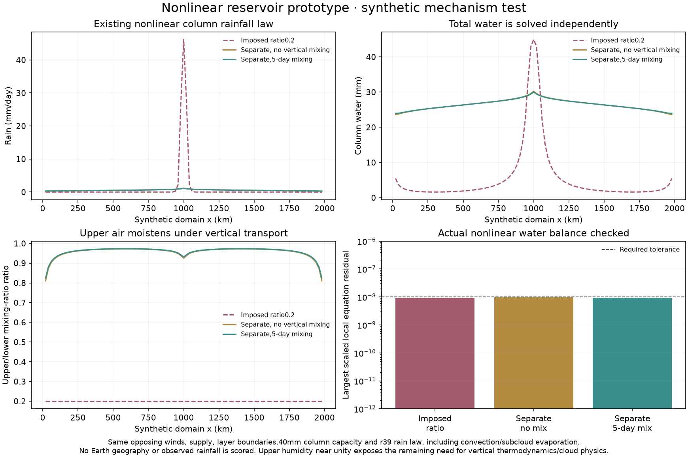
All three predeclared systems pass their actual nonlinear equations; each independent reservoir is checked separately. Rain is removed in proportion to current layer water. The near-uniform vertical humidity is a remaining physical limitation, not a validated Earth result.
The imposed-ratio peak is46.2mm/day; separate fields give about1.1mm/day in this manufactured case. Upper/lower specific-humidity ratios reach0.97, so vertical saturation and cloud formation still require explicit treatment. There is no seasonal thermal feedback, ocean exchange, storm transport or new climate calibration. Published atlas climates and headline scores remain unchanged.
Download nonlinear reservoir diagnostics · Equations, controls and physical limitations
Condensation within each layer
A further fixed experiment assigns0.625/0.375 of the same column saturation capacity to the lower/upper layers. Actual water remains independently solved. Each layer uses the old rain law at its equivalent column amount; this exactly recovers the original law when the old humidity shape is imposed, including the convective numerical water floor.
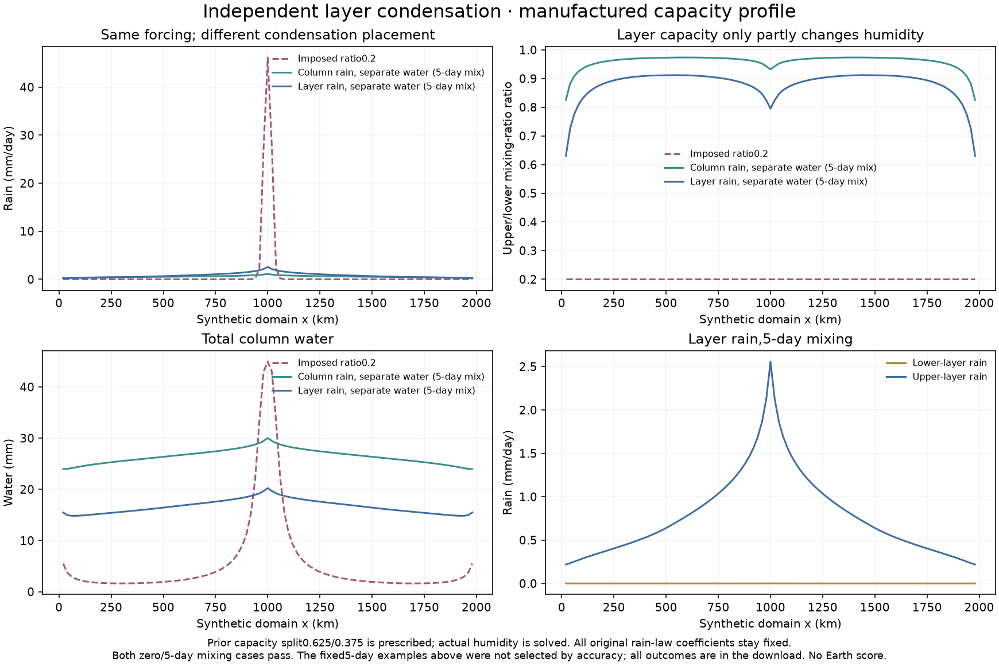
Shown: fixed5-day mixing comparisons, with both zero/5-day outcomes retained in the download. Layer rain reduces upper humidity somewhat, but ratios still reach0.91. The imposed capacity split is an approximation, not independent layer temperatures or an observed Earth result.
Both new systems pass strict per-layer nonlinear residuals. Six new closure/analytic/equilibrium checks bring the focused reservoir suite to21 passing tests. Neither this example nor the preceding proportional-column example supplies a new Earth accuracy score or changes the normal atlas climate.
Download layer-condensation results and verified parent controls · Capacity partition, tests and remaining limitations
Two-reservoir transport prototype
Two-reservoir transport prototype
Manufactured operator example, not a climate calibration or observed accuracy gain. Lower and upper water amounts are independent unknowns. Diagnosed vertical air exchange carries the donor layer's humidity and closes each layer's dry-air continuity. A rising moist flow can moisten the upper return rather than keeping its humidity artificially fixed.
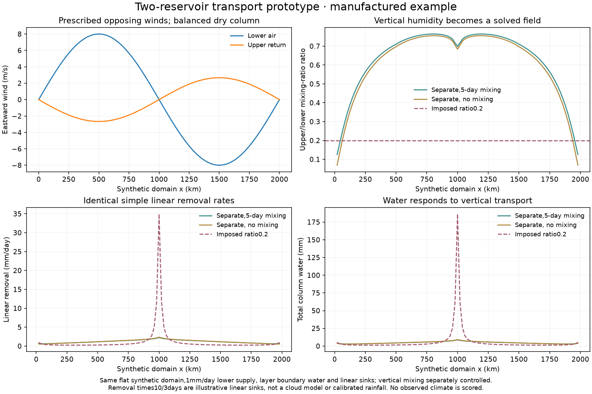
Same synthetic winds, surface supply, linear removal coefficients and both layer boundary values. Zero vertical mixing is shown separately. Illustrative linear sinks are not cloud physics; no observed climate is scored.
Nine independent equilibrium, matrix/face, analytic convergence and conservation checks pass. The water ledger closes to about3e-14mm/day in this example. The prototype is not coupled to the seasonal climate, and supplies no independent temperatures, saturation, cloud microphysics, storms or momentum. Published Earth/world climate and population maps remain unchanged.
Download manufactured reservoir diagnostics · Equations, verification and coupling requirements
Storm paths and local condensation
Storm paths and local condensation
Shared winds and corrected common-mass transport stay fixed. Six shorter conservative storm hops first run without any actual condensation, then with fixed crest coefficients0.5/0.75. Vapor above local capacity condenses where it forms; only surviving vapor takes later hops. The download retains actual condensation certificates so changing transport geometry is distinguished from rainout. This is an unresolved storm closure, not a resolved cloud trajectory.
Moist lower inflow and a drier upper return are transported as separate conservative directional branches. Their combined dry-air flux retains the stationary column constraint. Total water still shares a fixed vertical humidity profile; vertical humidity and thermodynamics are not independently prognostic. Surface heat, evaporation and terrain lift retain surface winds. Earth planetary settings stay fixed.
The pilot attempts 35 integrations: 35 pass strict numerics and 0 fail. Original and historical physical controls must reproduce their archived fields before candidates. No profile passed all fixed safeguards. No adopted profile, headline score or atlas climate is replaced by this research page.
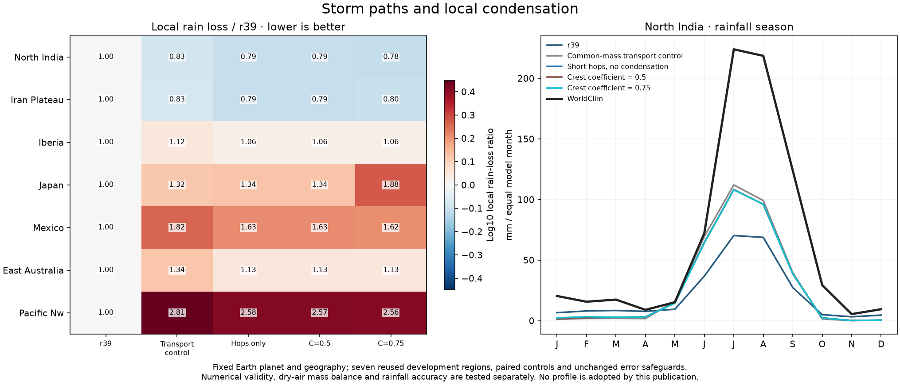
Every trial faces rain, temperature, regional, ocean, outside-wind, mass and separate-branch speed safeguards. Separate upwinding adds grid-dependent first-order mixing; it is not a measured physical diffusivity. Control details and all numerical certificates are in the download.
North India, identical scored cells| Profile | Annual rain mm | Monthly rain MAE mm | Wind RMSE m/s |
|---|
| r39 | 256 | 50.01 | 7.21 |
| Common-mass transport control | 345 | 43.67 | 5.42 |
| Short hops, no condensation | 335 | 42.12 | 5.41 |
| Crest coefficient = 0.5 | 335 | 42.12 | 5.41 |
| Crest coefficient = 0.75 | 336 | 42.18 | 5.41 |
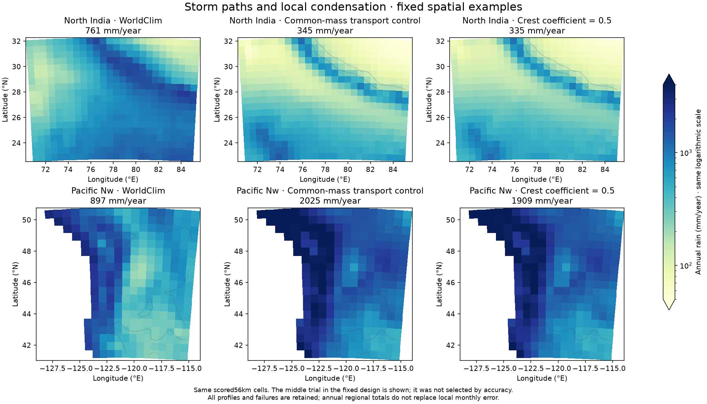
These fixed examples expose spatial tradeoffs. All ratios and failures remain in the results; closer annual totals can still hide worse local rain.
The model retains approximate hydrostatic mass, flat projected geometry, a fixed lower mass fraction and an imposed vertical humidity shape. Reanalysis constraints cover only a monthly925–300hPa partial column and omit transient moisture covariance. Reused development regions are not new independent validation.
Download storm paths and local condensation results · Method, results and limitations
Shared wind calibration on conservative transport
Shared wind calibration on conservative transport
Eight fixed Sobol samples vary land/ocean friction, trade/westerly speed and large/local thermal-pressure amplitudes. Common-mass water transport, vertical humidity ratio0.2,1km thermal shear, rainfall closure and Earth planetary forcing remain fixed. The download records all six parameter values for every trial; eight samples do not establish an optimum.
Moist lower inflow and a drier upper return are transported as separate conservative directional branches. Their combined dry-air flux retains the stationary column constraint. Total water still shares a fixed vertical humidity profile; vertical humidity and thermodynamics are not independently prognostic. Surface heat, evaporation and terrain lift retain surface winds. Earth planetary settings stay fixed.
The pilot attempts 70 integrations: 70 pass strict numerics and 0 fail. Original and historical physical controls must reproduce their archived fields before candidates. No profile passed all fixed safeguards. No adopted profile, headline score or atlas climate is replaced by this research page.
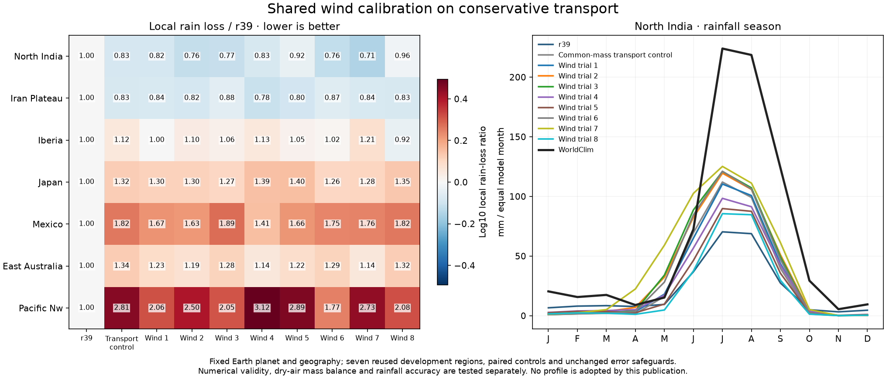
Every trial faces rain, temperature, regional, ocean, outside-wind, mass and separate-branch speed safeguards. Separate upwinding adds grid-dependent first-order mixing; it is not a measured physical diffusivity. Control details and all numerical certificates are in the download.
North India, identical scored cells| Profile | Annual rain mm | Monthly rain MAE mm | Wind RMSE m/s |
|---|
| r39 | 256 | 50.01 | 7.21 |
| Common-mass transport control | 345 | 43.67 | 5.42 |
| Wind trial 1 | 352 | 43.78 | 5.13 |
| Wind trial 2 | 410 | 43.44 | 4.89 |
| Wind trial 3 | 412 | 43.93 | 5.30 |
| Wind trial 4 | 327 | 44.07 | 4.69 |
| Wind trial 5 | 284 | 45.70 | 5.19 |
| Wind trial 6 | 398 | 42.90 | 5.18 |
| Wind trial 7 | 496 | 45.24 | 4.71 |
| Wind trial 8 | 251 | 45.87 | 5.61 |
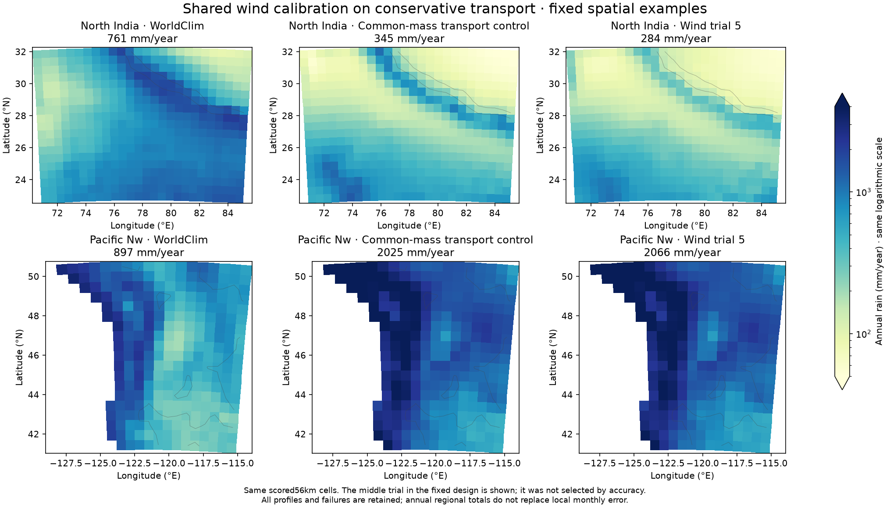
These fixed examples expose spatial tradeoffs. All ratios and failures remain in the results; closer annual totals can still hide worse local rain.
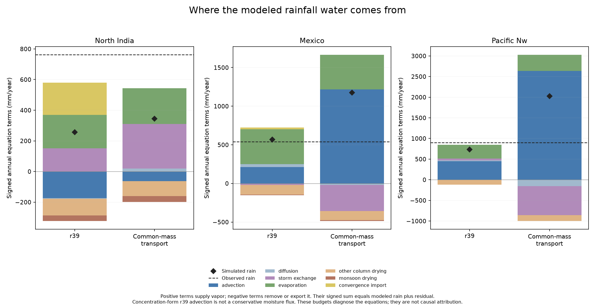
Excess coastal rain in the corrected two-branch control is supported mainly by mean-flow import; storm mixing exports water there. The signed terms are actual equation diagnostics, not causal shares of a nonlinear change. Legacy r39 concentration advection does not conserve vapor. All profiles and seven regional budgets are retained in the download.
The model retains approximate hydrostatic mass, flat projected geometry, a fixed lower mass fraction and an imposed vertical humidity shape. Reanalysis constraints cover only a monthly925–300hPa partial column and omit transient moisture covariance. Reused development regions are not new independent validation.
Download shared wind calibration on conservative transport results · Method, results and limitations
Rain activation and moisture delivery
Rain activation and moisture delivery
Transport is held at the middle humidity ratio0.2. Only the rain-activation threshold changes to fixed0.5/0.6/0.7, testing whether delayed rainout improves delivery. This bounded plan was declared before its parent experiment finished; no extra humidity ratios or regional multipliers are added.
Moist lower inflow and a drier upper return are transported as separate conservative directional branches. Their combined dry-air flux retains the stationary column constraint. Total water still shares a fixed vertical humidity profile; vertical humidity and thermodynamics are not independently prognostic. Surface heat, evaporation and terrain lift retain surface winds. Earth planetary settings stay fixed.
The pilot attempts 35 integrations: 35 pass strict numerics and 0 fail. Original and historical physical controls must reproduce their archived fields before candidates. No profile passed all fixed safeguards. No adopted profile, headline score or atlas climate is replaced by this research page.
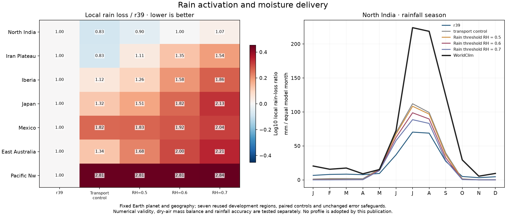
Every trial faces rain, temperature, regional, ocean, outside-wind, mass and separate-branch speed safeguards. Separate upwinding adds grid-dependent first-order mixing; it is not a measured physical diffusivity. Control details and all numerical certificates are in the download.
North India, identical scored cells| Profile | Annual rain mm | Monthly rain MAE mm | Wind RMSE m/s |
|---|
| r39 | 256 | 50.01 | 7.21 |
| transport control | 345 | 43.67 | 5.42 |
| Rain threshold RH = 0.5 | 328 | 45.41 | 5.43 |
| Rain threshold RH = 0.6 | 300 | 47.84 | 5.44 |
| Rain threshold RH = 0.7 | 273 | 49.76 | 5.44 |
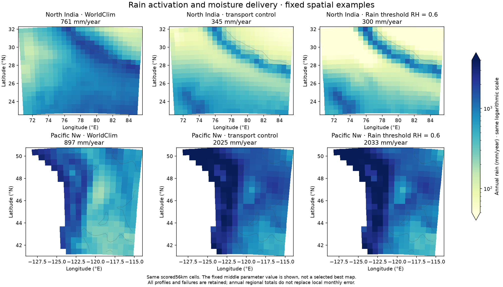
These fixed examples expose spatial tradeoffs. All ratios and failures remain in the results; closer annual totals can still hide worse local rain.
The model retains approximate hydrostatic mass, flat projected geometry, a fixed lower mass fraction and an imposed vertical humidity shape. Reanalysis constraints cover only a monthly925–300hPa partial column and omit transient moisture covariance. Reused development regions are not new independent validation.
Download rain activation and moisture delivery results · Method, results and limitations
Air-mass-aware water transport
Air-mass-aware water transport
This follow-up uses the same air mass for donor W/M advection, mixing-ratio diffusion and storm exchange. The disabled path reproduces the preceding two-layer control exactly.
Moist lower inflow and a drier upper return are transported as separate conservative directional branches. Their combined dry-air flux retains the stationary column constraint. Total water still shares a fixed vertical humidity profile; vertical humidity and thermodynamics are not independently prognostic. Surface heat, evaporation and terrain lift retain surface winds. Earth planetary settings stay fixed.
The pilot attempts 49 integrations: 49 pass strict numerics and 0 fail. Original and historical physical controls must reproduce their archived fields before candidates. No profile passed all fixed safeguards. No adopted profile, headline score or atlas climate is replaced by this research page.
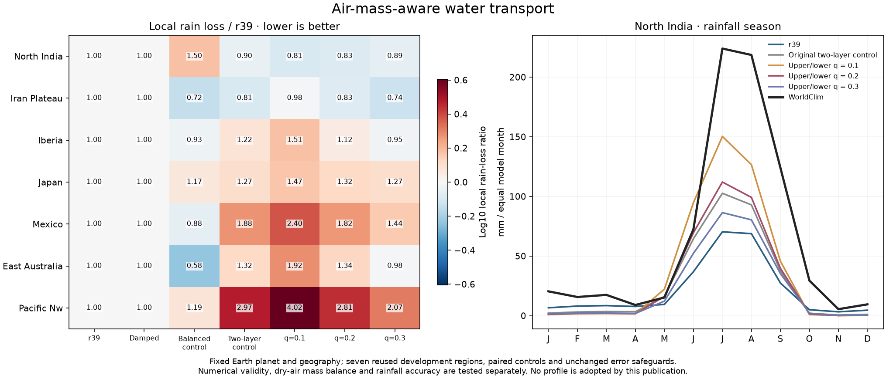
Every trial faces rain, temperature, regional, ocean, outside-wind, mass and separate-branch speed safeguards. Separate upwinding adds grid-dependent first-order mixing; it is not a measured physical diffusivity. Control details and all numerical certificates are in the download.
North India, identical scored cells| Profile | Annual rain mm | Monthly rain MAE mm | Wind RMSE m/s |
|---|
| r39 | 256 | 50.01 | 7.21 |
| r39 numerical control | 256 | 50.01 | 7.21 |
| Balanced single layer | 81 | 59.89 | 7.13 |
| Original two-layer control | 329 | 46.20 | 5.39 |
| Upper/lower q = 0.1 | 446 | 44.85 | 5.41 |
| Upper/lower q = 0.2 | 345 | 43.67 | 5.42 |
| Upper/lower q = 0.3 | 277 | 44.94 | 5.42 |
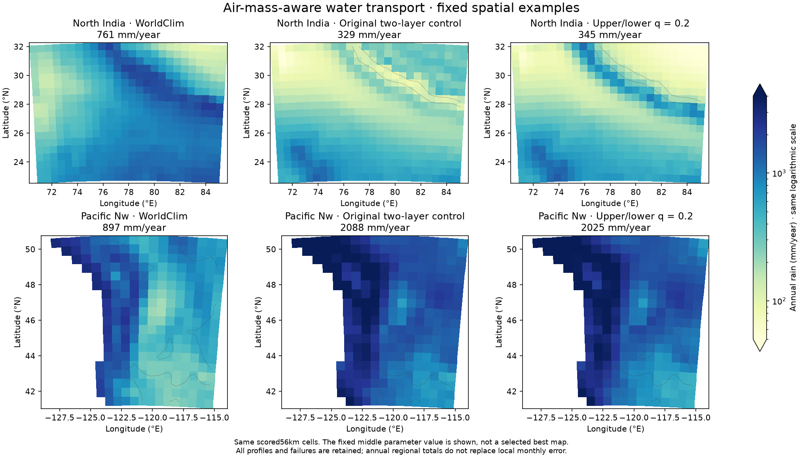
These fixed examples expose spatial tradeoffs. All ratios and failures remain in the results; closer annual totals can still hide worse local rain.
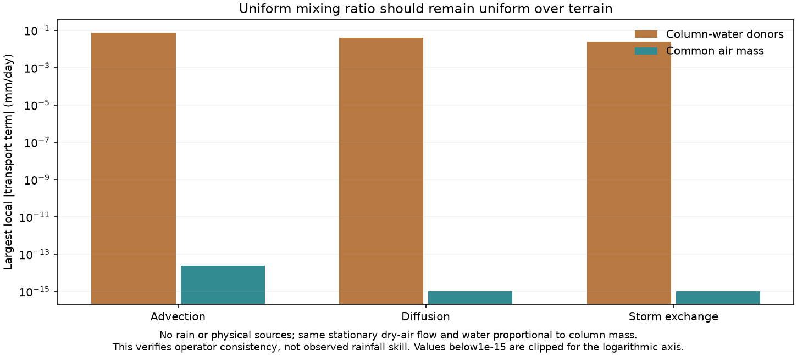
The common air mass corrects a terrain tracer-consistency defect. Numerical equilibrium is separate from climate accuracy.
The model retains approximate hydrostatic mass, flat projected geometry, a fixed lower mass fraction and an imposed vertical humidity shape. Reanalysis constraints cover only a monthly925–300hPa partial column and omit transient moisture covariance. Reused development regions are not new independent validation.
Download air-mass-aware water transport results · Method, results and limitations
Moist inflow and upper return
Moist inflow and upper return flow
Moist lower inflow and a drier upper return are transported as separate conservative directional branches. Their combined dry-air flux retains the stationary column constraint. Total water still shares a fixed vertical humidity profile; vertical humidity and thermodynamics are not independently prognostic. Surface heat, evaporation and terrain lift retain surface winds. Earth planetary settings stay fixed.
The pilot attempts 49 integrations: 49 pass strict numerics and 0 fail. Original and historical physical controls must reproduce their archived fields before candidates. No profile passed all fixed safeguards. No adopted profile, headline score or atlas climate is replaced by this research page.
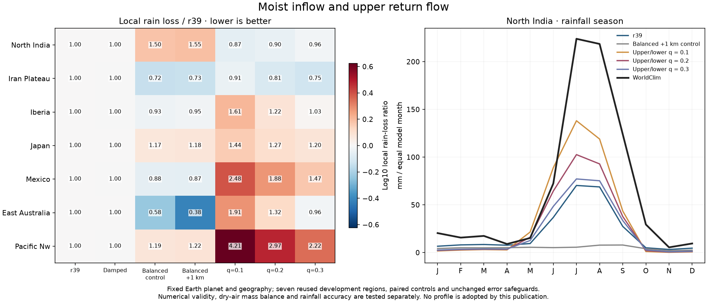
Every trial faces rain, temperature, regional, ocean, outside-wind, mass and separate-branch speed safeguards. Separate upwinding adds grid-dependent first-order mixing; it is not a measured physical diffusivity. Control details and all numerical certificates are in the download.
North India, identical scored cells| Profile | Annual rain mm | Monthly rain MAE mm | Wind RMSE m/s |
|---|
| r39 | 256 | 50.01 | 7.21 |
| r39 numerical control | 256 | 50.01 | 7.21 |
| Balanced single layer | 81 | 59.89 | 7.13 |
| Balanced +1 km control | 60 | 59.86 | 5.47 |
| Upper/lower q = 0.1 | 423 | 46.97 | 5.39 |
| Upper/lower q = 0.2 | 329 | 46.20 | 5.39 |
| Upper/lower q = 0.3 | 265 | 47.58 | 5.40 |
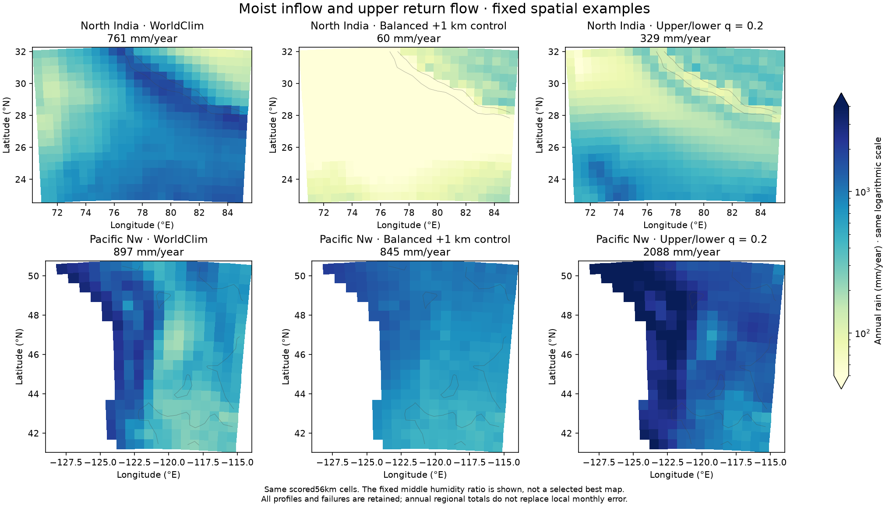
These fixed examples expose spatial tradeoffs. All ratios and failures remain in the results; closer annual totals can still hide worse local rain.
The model retains approximate hydrostatic mass, flat projected geometry, a fixed lower mass fraction and an imposed vertical humidity shape. Reanalysis constraints cover only a monthly925–300hPa partial column and omit transient moisture covariance. Reused development regions are not new independent validation.
Download moist inflow and upper return flow results · Method, results and limitations
Column mass, wind and rainfall
Mass-consistent column flow
A divergent surface-like wind can accumulate air when applied to a whole stationary column. This experiment makes the minimum mass-weighted velocity correction needed to cancel dry-column face-flux divergence. It keeps Earth’s planetary settings fixed and adds no observed-wind forcing. Surface heat, evaporation and terrain lift retain the surface wind.
The fixed pilot attempts 49 integrations: 49 pass strict numerics and 0 fail. Seven adopted climate controls and three native wind controls reproduce exactly. Another21 physical/numerical controls reproduce every archived array field. No candidate passed the fixed screening safeguards. No fit or atlas climate is adopted by this page.
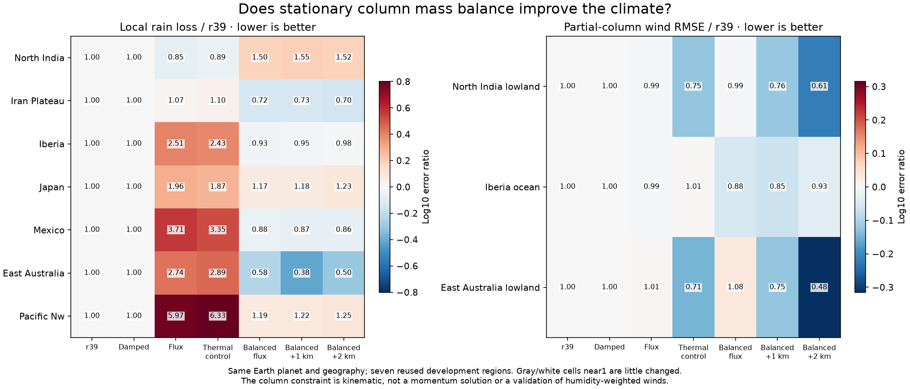
Lower ratios improve on r39; the full selection also protects temperature, individual regions, ocean climate and solver/budget validity. Numerical success and mass consistency are separate from climate accuracy.
North India, identical scored cells| Profile | Annual rain mm | Monthly rain MAE mm | Wind vector RMSE m/s |
|---|
| Adopted r39 | 256 | 50.01 | 7.21 |
| r39 numerical control | 256 | 50.01 | 7.21 |
| Conservative flux | 482 | 48.79 | 7.10 |
| Thermal control, 1 km | 579 | 52.82 | 5.40 |
| Mass-balanced flux | 81 | 59.89 | 7.13 |
| Balanced +1 km | 60 | 59.86 | 5.47 |
| Balanced +2 km | 57 | 59.03 | 4.36 |
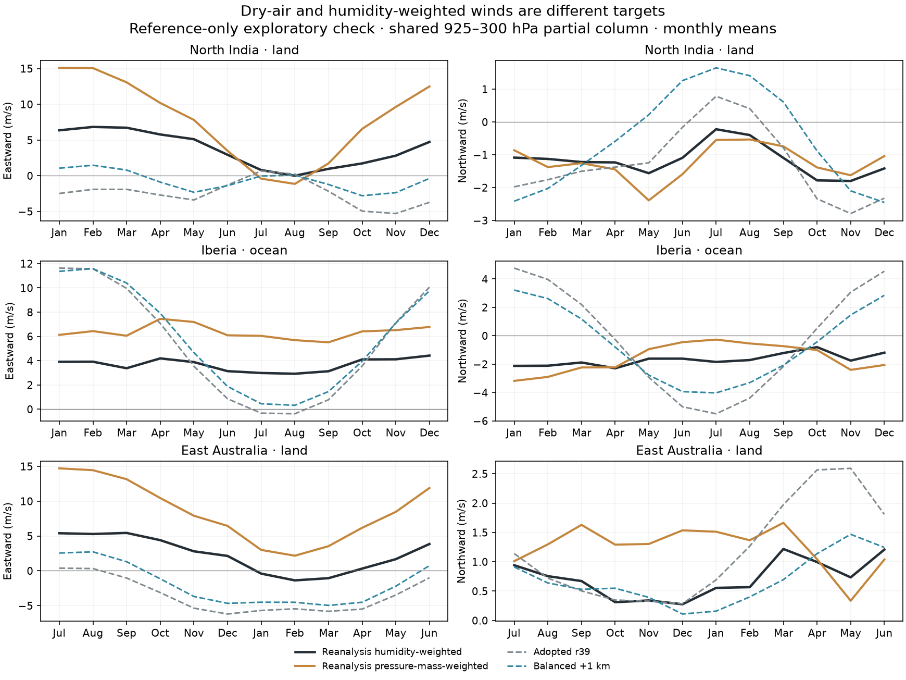
This reference-only exploratory check exposes the closure’s strongest assumption: a mass-consistent dry-air wind need not carry moisture in the right direction. Both targets span only925–300hPa, use monthly means and omit transient moisture covariance. No new target or validation sample is used to select a candidate.
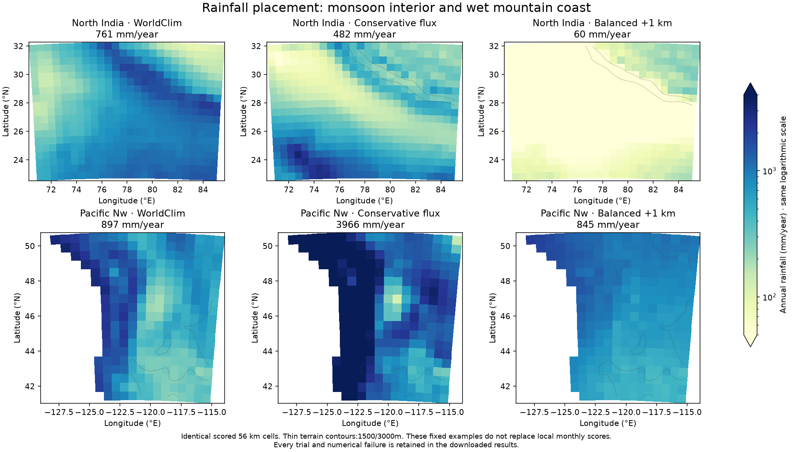
These two fixed examples show rain placement in the monsoon interior and a wet mountain coast. All candidates and failures remain in the results; maps do not replace monthly cell errors.
This is a stationary equivalent-barotropic kinematic closure with approximate hydrostatic column mass and adjustable open-border winds. It does not solve momentum, surface-pressure storage, vertical return circulation or the vertical humidity profile. Flat-grid geometry and reference-period limitations remain. The historical global/city climate scores are unchanged.
Download column mass, rainfall and wind diagnostics · Column mass method and results
Thermal wind, rainfall and circulation
Thermal-wind shear: an effective layer remains insufficient
The outside wind comparison motivated a new physical experiment. Horizontal modeled temperature gradients generate hydrostatic/geostrophic shear up to fixed effective heights of1,2 and3km. Earth’s orbit, radiation, rotation and geography stay fixed. No observed wind enters the model. The mechanism is opt-in, with the legacy default unchanged.
The fixed six-profile pilot attempts42 integrations;42 pass strict numerics and0 fail. Seven original climate controls and three native wind controls reproduce exactly. Separate damped controls keep numerical sensitivity distinct from physical changes. No physical candidate qualifies. The selection still requires rainfall, temperature, regional, ocean and outside-wind safeguards; no full31 or fine stage runs.
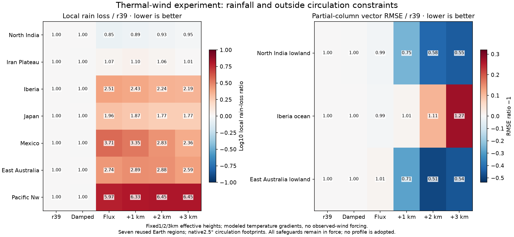
Wind errors compare a fixed humidity-weighted925–300hPa reference; this partial column excludes transient moisture covariance. Rain loss preserves local annual and monthly errors; a closer regional annual total can still have worse local monthly rain. White FAILED cells, if present, remain failed rather than entering partial means.
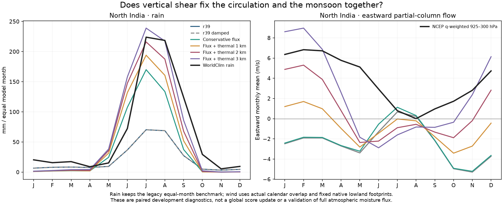
Changed transport direction alone is insufficient evidence of a better climate. The approximation still has one effective moist layer, fixed synoptic smoothing and an equatorial taper; it does not resolve vertical return flow or an atmospheric momentum/energy budget.
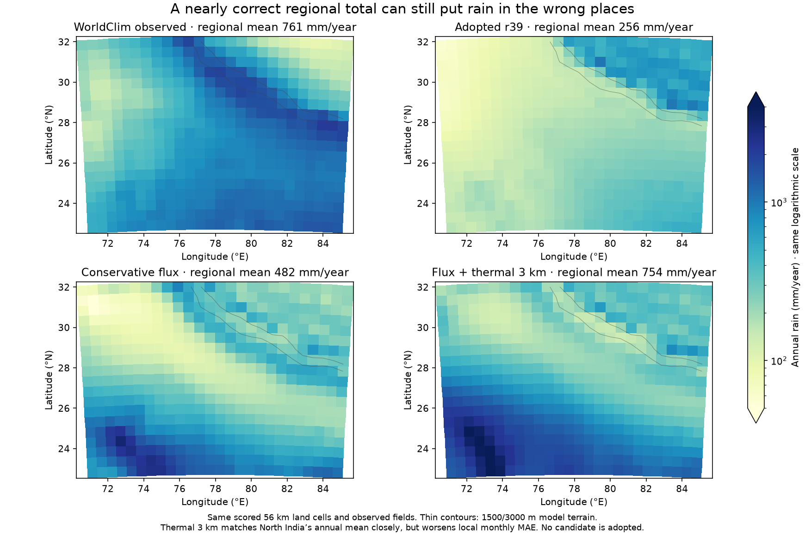
At3km, the regional annual total reaches754mm versus761mm observed, while local monthly MAE rises from50.0mm for r39 to59.3mm. The map shows why a correct average does not establish accurate local climate.
Download thermal-wind results and safeguards · Thermal-wind method and results
Circulation against reanalysis
Checking the winds against reanalysis
Four unchanged r39 integrations reproduce archived climate fields exactly and pass strict numerics. Their modeled wind vectors are compared with NCEP/NCAR1981–2010 pressure-level monthly means. This is an outside circulation diagnosis; it changes no climate fit or rainfall score.
Over North India’s11 retained lowland cells, the humidity-weighted925–300hPa vector RMSE is7.21m/s and direction cosine−0.54. Eastern Australia’s7 lowland cells give6.27m/s and−0.14. Iberia’s20 ocean cells show an overly strong mean-vector magnitude:7.77m/s modeled versus4.21m/s in that partial column. Different pressure targets give different answers; the model’s single surface-like layer cannot represent the full wind profile.
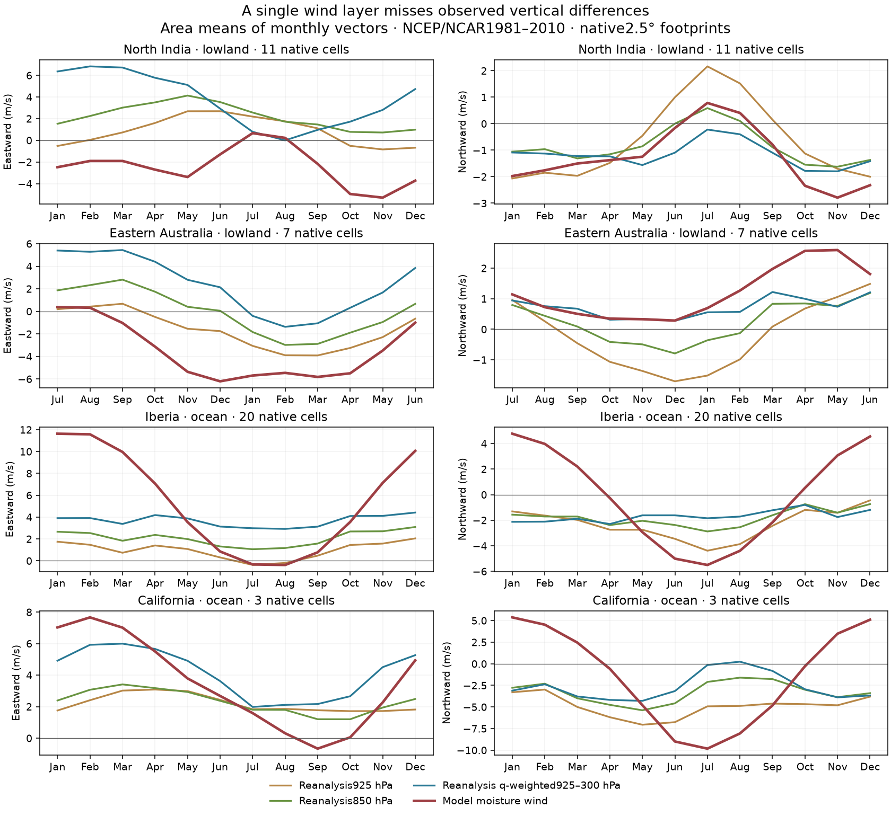
Monthly mean vector components expose direction, season and height differences. Actual month overlap and full projection geometry are included. A speed-only comparison would miss reversed flow.
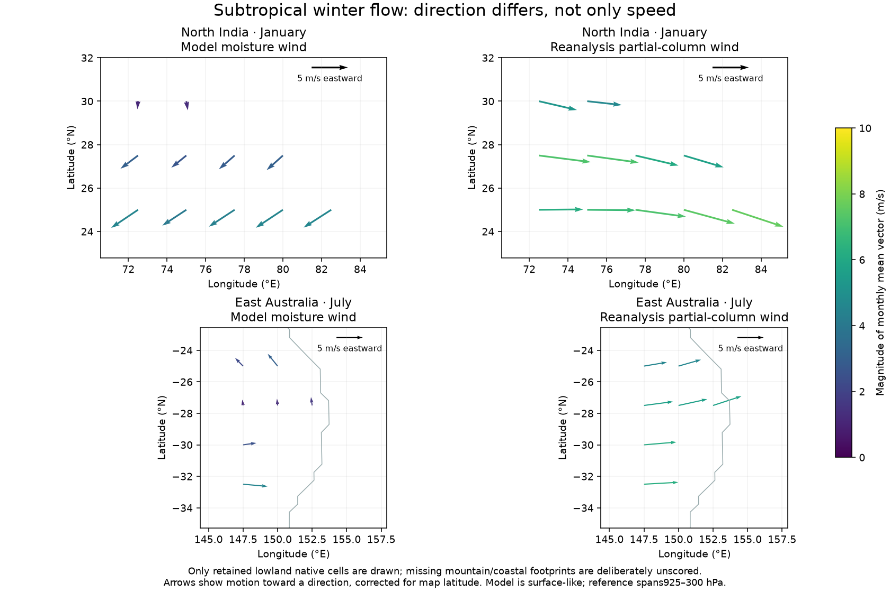
Conservative exclusions leave11/7 lowland cells in India/Australia and no California land sample; California has only3 retained ocean cells. Fine model cells are aggregated into native2.5° footprints rather than counted as independent references.
Reanalysis is model-assisted, not direct point observations. The humidity-weighted partial column omits air below925hPa/above300hPa and transient q′u′ covariance. Terrain masking uses model geography; native below-ground flags are unavailable. The reference period differs from WorldClim1970–2000 rainfall. These reused regions do not establish global circulation or rainfall skill.
Download circulation vectors and diagnostics · Circulation method and scope
Observation-calendar alignment
Observation-calendar alignment
The historical Earth benchmark compares twelve equal model months with WorldClim's calendar-month observations. A separate audit now aggregates the actual unchanged r39 time series into declared 365-day Gregorian periods, including circular month boundaries for a mirrored southern region.
All four reused-region simulations pass numerical checks and reproduce the archived equal-month controls exactly. Calendar-aligned rainfall MAE is lower by only 0.02–0.12 mm/month, while temperature MAE rises 0.009–0.032°C. Annual simulated rain is unchanged to rounding precision. The mismatch exists, but it does not explain the large monsoon or coastal errors.
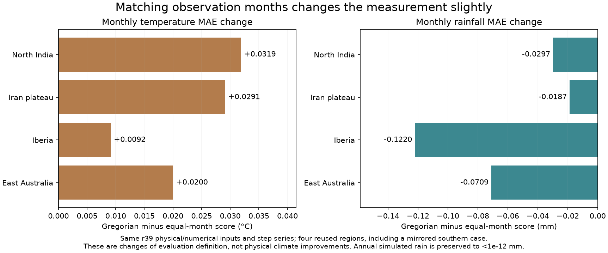
The two methods score the same physical climate. Their differences are evaluation changes, not a new calibrated fit. This four-region audit does not remeasure the 31-region or 3,667-city headline statistics.
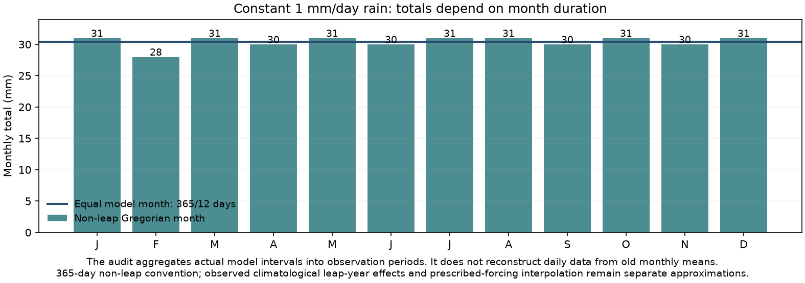
A known-answer example explains the duration mismatch. The audit uses a non-leap 365-day calendar and the existing half-year southern mirror; leap-year and forcing-interpolation approximations remain. Model physics, defaults, historical scores and all atlas climate fields stay unchanged.
Download both calendar definitions and paired scores · Calendar method and scope
Conservative flux and column wind
Stable conservative replay and column winds
The next fixed experiment separates numerical stability from physical accuracy. A lower-damping replay uses up to 1,024 moisture iterations at the same 1% residual tolerance. It converges in every region, including Japan and Mexico, whose original failures remain preserved. All 42 runs pass, and seven original controls reproduce exactly.
A damped r39 control changes mapped-cell monthly rainfall by at most 0.0091 mm, so the large conservative-transport changes are not explained by this numerical drift. Three physically distinct trials then reduce and turn the column-pressure wind while keeping conservative mean and storm transport.
No physical trial qualifies. Lower column drag reduces Indian rain again while leaving severe coastal wet biases. The pure conservative replay still gives 482 mm/year in North India, 1,057 in Iberia, and 3,966 in Pacific NW. All residual, budget, regional and ocean protections remain in force; no full31 or finer stage runs.
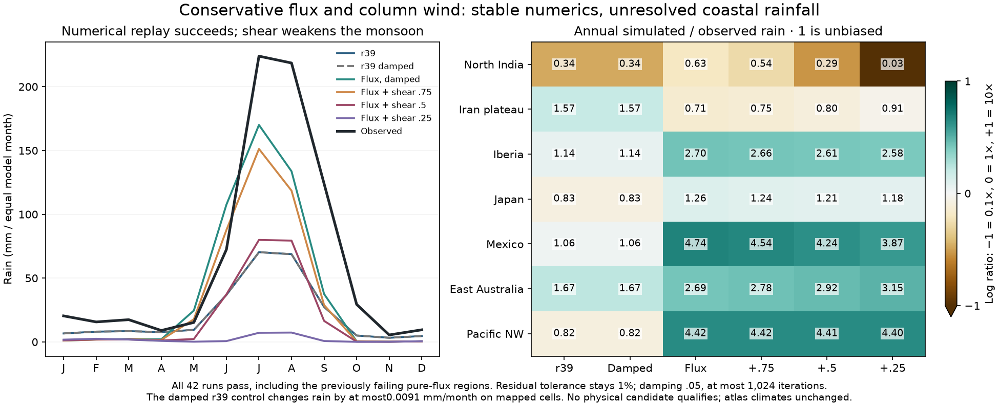
Ratios compare annual regional means and do not measure local spatial accuracy. The full selection uses monthly cell errors and regional protections. Stable numerics and conservative accounting are separate from accurate circulation and rainfall.
The surface-derived winds remain a likely structural limitation for a full-column flux equation: turning their pressure component alone is insufficient. This experiment does not establish the correct vertical wind or mass-return circulation. Qualified Earth physics stays r39; the published Earth atlas retains r38.
Download numerical drift and column-wind measurements · Complete follow-up record
Conservative vapor transport
Conservative vapor transport: a structural test
An opt-in shared-face flux equation now accounts for both incoming and outgoing vapor. It disables the old separate positive convergence import. Heat keeps its existing solver; moisture has a separate checked solver and a regional ledger that includes boundary reservoirs, evaporation, vertical drying, storms and rain.
Five comparisons isolate import removal, storm conservation and the advection change. Of 35 attempts, 31 pass and four nonlinear solves fail. All seven unchanged controls reproduce exactly. With conservative mean and storm transport, North India rises from 256 to 482 mm/year, toward 761 mm observed.
The climate candidate is rejected. Iberia, eastern Australia and Pacific NW become much too wet; Japan and Mexico fail the solve. No failed run enters an aggregate score or advances to later gates. A closed transport ledger is useful, but it does not establish accurate rainfall or a closed planetary water cycle.
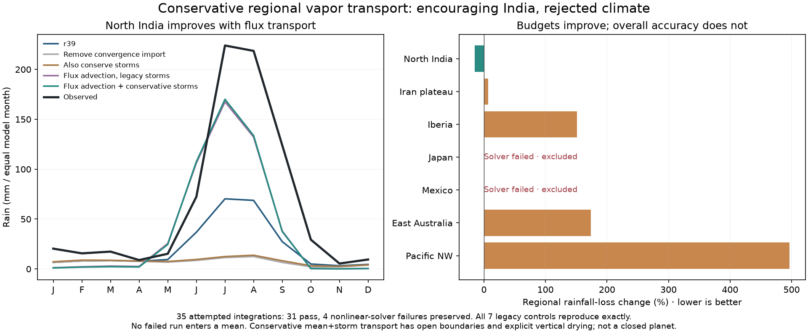
Horizontal flux cancellation is near machine precision in successful conservative runs. This is a steady regional vapor equation with open borders and modeled vertical losses, not a transient atmosphere or a closed planet. Default physics and atlas climate data remain unchanged.
Download vapor-flux results and failed-solve records · Transport method and experiment
Land, ocean and pressure balance
Land, ocean and pressure balance
The next fixed experiment separated land and ocean drag, then tested nominal drags with 10% and 20% stronger thermal-pressure amplitudes. All 155 integrations passed numerical checks, with 31 fresh reference error/geography controls. No planetary property changed.
The 10% pressure candidate improved average rainfall loss by 1.64% and passed the old group gate, but failed the declared Japan, Mexico and Pacific NW protections. Land-only, ocean-only and 20% pressure candidates failed their complete criteria too. No candidate reached the ocean-finalist, fine-grid or established-six stage.
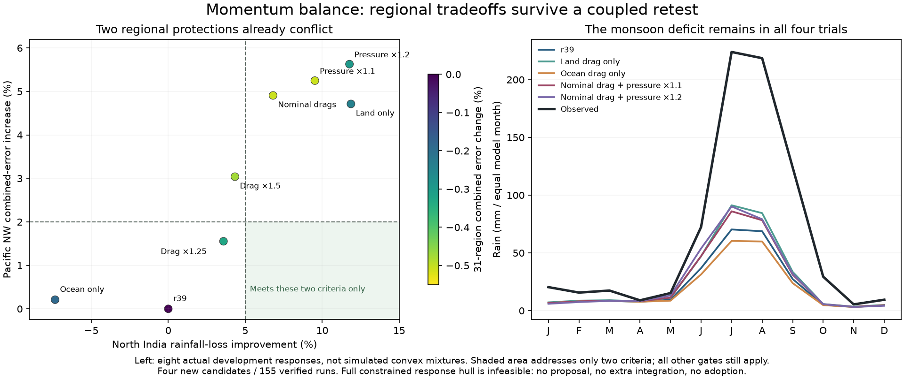
The eight plotted points are actual paired development results. No convex combination of their error responses satisfies all the declared constraints, even in a diagnostic that omits the overall-improvement threshold. This surrogate result is limited to this sampled neighborhood; it is not proof that realistic physical improvements are impossible.
A constrained proposal tool therefore generated no new candidate and no extra climate run. It rejects infeasible combinations rather than allowing a larger average gain to pay for protected regional failures. Adopted Earth physics remains r39; all three atlas climates and population fields are unchanged.
Download momentum-balance and feasibility measurements · Experiment and proposal method
Surface momentum
Surface momentum: a gain that did not qualify
Three fixed land/ocean drag settings were tested against all 31 development regions, keeping the planet and other physics fixed. All 124 integrations passed their numerical checks; the fresh r39 reference reproduced the archived regional errors and geography.
The nominal drag values reduced mean rainfall loss by 1.54% and raised North India's annual rain from 256 to 285 mm. Temperature MAE rose from 1.793 to 1.802°C. Every protected group improved on the existing combined metric, and the nominal candidate passed that development gate.
It still failed this experiment's declared regional protections. Mexico and the Pacific Northwest had combined error increases above 2%. The candidate was rejected, and no ocean-finalist, fine-grid or established-region stage was run. The other two candidates failed their development or extra regional criteria too.
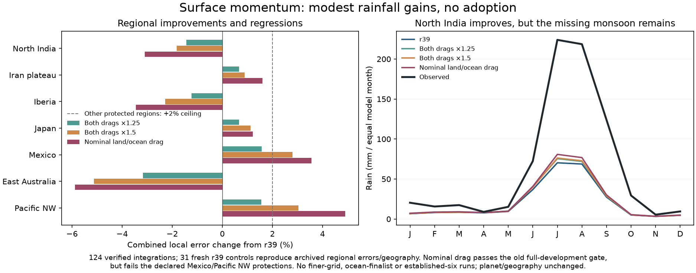
A physically plausible parameter change can improve average rainfall and still be unsuitable for adoption. These are reused development regions; the result does not establish measured fantasy-world accuracy.
Download surface-momentum measurements · Experiment record
Pressure-driven column shear
Turning the moisture-column wind
Lower friction above the surface changes the direction of pressure-driven flow, as well as its speed. Three fixed drag ratios were tested with the current Earth physics and unchanged planetary inputs. All 28 runs converged, and seven default controls reproduced their archived climate exactly.
All three candidates were rejected. North India's annual rain fell from 256 mm to 203, 130 and 75 mm, against 761 mm observed. Japan and the Pacific Northwest improved slightly, but India and eastern Australia worsened. No candidate advanced to the finer-grid or established-region stages.
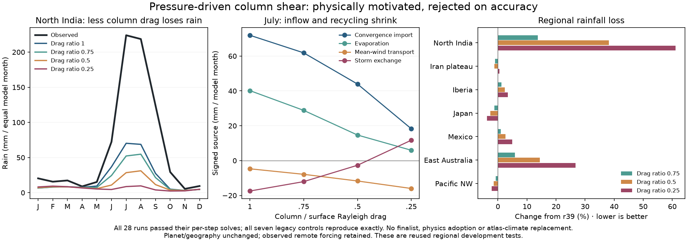
Reducing drag weakened cross-isobar moisture inflow in India. Faster or more geostrophic flow alone does not supply its missing monsoon. Default physics and every atlas climate remain unchanged.
This screen also used actual simulated sea-surface temperatures, including wind-dependent upwelling, against the restored twelve-month WOA18 climatology. The candidates passed the ocean-error and wind-speed limits; they failed land-rainfall accuracy. This seven-region ocean check differs from the older static 19-region SST benchmark.
Download shear experiment measurements · Experiment record